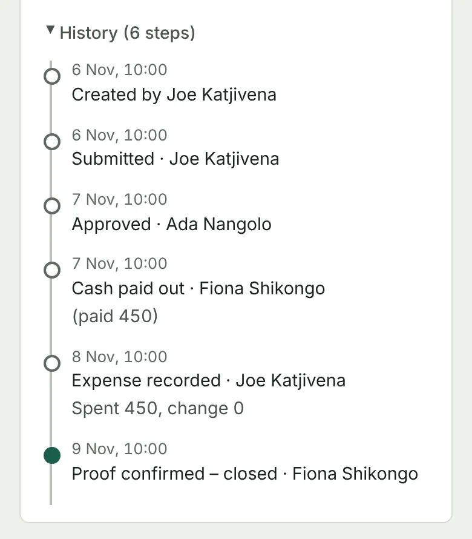

1
Request
Submit a cash request with the amount, purpose and supporting information.
In the exampleOn 6 November Joe asks for N$450.00 for 45 litres of fuel for a site visit to Okahandja.
2
Review
Handle requests according to your company’s approval limits.
In the exampleThe demonstration company lets finance pay up to N$200.00 alone. This request is above that, so it goes to the approver, Ada Nangolo, who approves it on 7 November.
